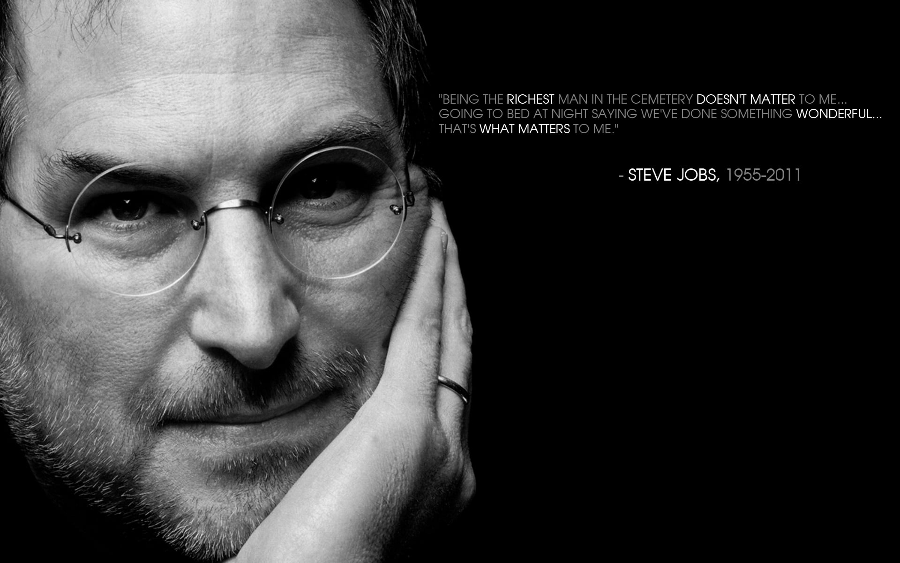

Achievements
- Founding Apple Inc. (1976)
- Co-founded Apple with Steve Wozniak and Ronald Wayne in a garage.
- Introduced the Apple I and Apple II, which were pivotal in the personal computer revolution.

- The Macintosh (1984)
- Launched the first successful personal computer with a graphical user interface (GUI).
- Brought the mouse and point-and-click interface to the mainstream.

- Creation of NeXT (1985–1996)
- After leaving Apple, he founded NeXT Inc., which developed high-end workstations and advanced operating systems that eventually became the foundation for macOS.
- Reviving Apple (1997)
- Returned to Apple when it acquired NeXT.
- Led the company from near bankruptcy to becoming one of the most valuable companies in the world.
- iMac, iBook, and Design Innovation
- Introduced colorful, all-in-one computers and redefined product aesthetics and user-friendliness.

- iPod and iTunes (2001)
- Transformed the music industry by introducing the iPod and the iTunes Store, making digital music mainstream and accessible.

- iPhone (2007)
- Revolutionized mobile phones with the first touchscreen smartphone.
- Combined an iPod, phone, and internet communicator in one device.

- iPad (2010)
- Created a new category of mobile computing with the tablet.

- Pixar and Animated Film
- Bought Pixar from George Lucas and turned it into a leading animation studio.
- Helped produce award-winning films like Toy Story, Finding Nemo, and The Incredibles.

- Legacy and Cultural Impact
- Known for innovation, perfectionism, and intuitive design.
- Left a lasting legacy in technology, design, entertainment, and entrepreneurship.
